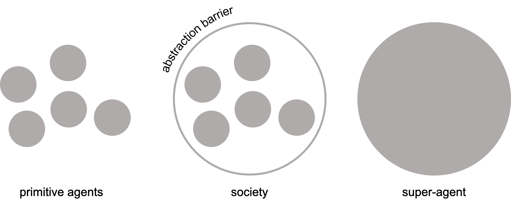
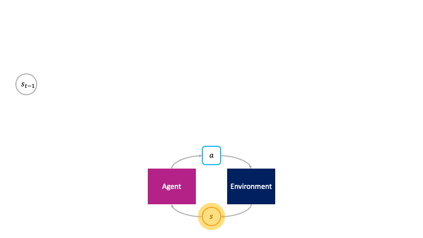
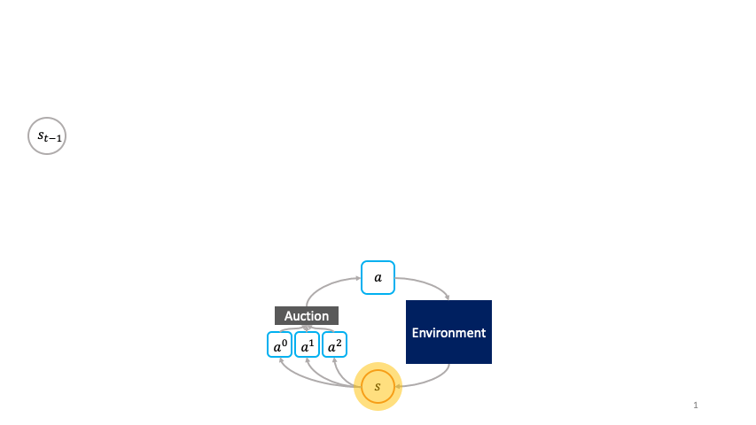
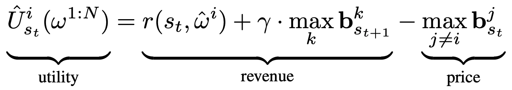
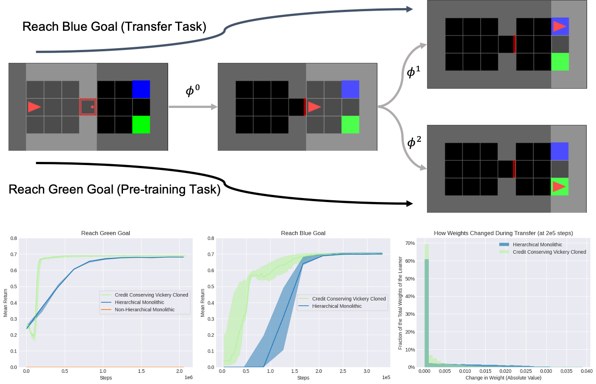
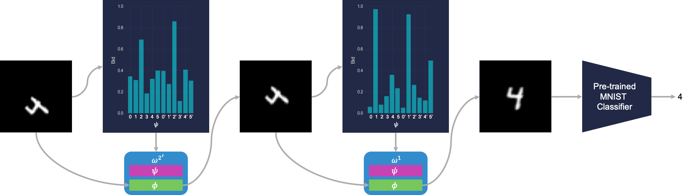

Many neural network architectures that underlie various artificial intelligence systems today bear an interesting similarity to the early computers a century ago. Just as early computers were specialized circuits for specific purposes like solving linear systems or cryptanalysis, so too does the trained neural network generally function as a specialized circuit for performing a specific task, with all parameters coupled together in the same global scope.
One might naturally wonder what it might take for learning systems to scale in complexity in the same way as programmed systems have. And if the history of how abstraction enabled computer science to scale gives any indication, one possible place to start would be to consider what it means to build complex learning systems at multiple levels of abstraction, where each level of learning is the emergent consequence of learning from the layer below.
This post discusses our recent paper that introduces a framework for societal decision-making, a perspective on reinforcement learning through the lens of a self-organizing society of primitive agents. We prove the optimality of an incentive mechanism for engineering the society to optimize a collective objective. Our work also provides suggestive evidence that the local credit assignment scheme of the decentralized reinforcement learning algorithms we develop to train the society facilitates more efficient transfer to new tasks.
Levels of Abstraction in Complex Learning Systems
From corporations to organisms, many large-scale systems in our world are composed of smaller individual autonomous components, whose collective function serve a larger objective than the objective of any individual component alone. A corporation for example, optimizes for profits as if it were a single super-agent when in reality it is a society of self-interested human agents, each with concerns that may have little to do with profit. And every human is also simply an abstraction of organs, tissues, and cells individually adapting and making their own simpler decisions.
You know that everything you think and do is thought and done by you. But what's a "you"? What kinds of smaller entities cooperate inside your mind to do your work?
— Marvin Minsky, The Society of Mind
At the core of building complex learning systems at multiple levels of abstraction is to understand the mechanisms that bind consecutive levels together. In the context of learning for decision-making, this means to define three ingredients:
- A framework for expressing the encapsulation of a society of primitive agents as a super-agent
- An incentive mechanism that guarantees the optimal solution for the super-agent's decision problem emerges as a consequence of the primitives optimizing their individual decision problems
- A learning algorithm for implicitly training the super-agent by directly training the primitives
The incentive mechanism is the abstraction barrier that connects the optimization problems of the primitive agents from the optimization problem of the society as a super-agent.

Building complex learning systems at multiple levels of abstraction requires defining the incentive mechanism that connects the optimization problems at the level of primitive agent to the optimization problem at the level of the society. The incentive mechanism is the abstraction barrier that separates the society as a super-agent from its constituent primitive agents.
If it were possible to construct the incentive mechanism in a way that the dominant strategy equilibrium of the primitive agents coincides with the optimal solution for the super-agent, then the society can in theory be faithfully abstracted as a super-agent, which could then serve as a primitive for the next level of abstraction, and so on, thereby constructing in a learning system the higher and higher levels of complexity that characterize the programmed systems of modern software infrastructure.
A Market Economy Perspective on Reinforcement Learning
As a first step towards this goal, we can work backwards: start with an agent, imagine it were a super-agent, and study how to emulate optimal behavior of such an agent via a society of even more primitive agents. We consider a restricted scenario that builds upon existing frameworks familiar to us, Markov decision processes (MDP). Normally, the objective of the learner is to maximize the expected return of the MDP. In deep reinforcement learning, the approach that directly optimizes this objective parameterizes the policy as a function that maps states to actions and adjusts the policy parameters according to the gradient of the MDP objective.
We refer to this standard approach as the monolithic decision-making framework because all the learnable parameters are globally coupled together under a single objective. The monolithic decision-making framework views reinforcement learning from the perspective of a command economy, in which all production — the transformation of past states $s_t$ into future states $s_{t+1}$ — and wealth distribution — the credit assignment of reward signals to parameters — derive directly from single central authority — the MDP objective.

In the monolithic decision-making framework, actions are chosen passively by the agent.
But as suggested in previous work dating back at least two decades, we can also view reinforcement learning from the perspective of a market economy, in which production and wealth distribution are governed by the economic transactions between actions that buy and sell states to each other. Rather than being passively chosen by a global policy as in the monolithic framework, the actions are primitive agents that actively choose themselves when to activate in the environment by bidding in an auction to transform the state $s_t$ to the next state $s_{t+1}$. We call this the societal decision-making framework because these actions form a society of primitive agents that themselves seek to maximize their auction utility at each state. In other words, the society of primitive agents form a super-agent that solves the MDP as a consequence of the primitive agents' optimal auction strategies.

In the societal decision-making framework, actions actively choose themselves when to activate.
In our recent work, we formalize the societal decision-making framework and develop a class of decentralized reinforcement learning algorithms for optimizing the super-agent as a by-product of optimizing the primitives' auction utilities. We show that adapting the Vickrey auction as the auction mechanism and initializing redundant clones of each primitive yields a society, which we call the cloned Vickrey society, whose dominant strategy equilibrium of the primitives optimizing their auction utilities coincides with the optimal policy of the super-agent the society collectively represents. In particular, with the following specification of auction utility, we can leverage the truthfulness property of the Vickrey auction to incentivize the primitive agents, which we denote byt $\omega^{1:N}$, to bid the optimal Q-value of their corresponding action:

The utility $\hat{U}^i_{s_t}$ for the primitive with the highest bid, $\hat{\omega}^i$ is given by the revenue it receives from selling $s_{t+1}$ in the auction at the next time-step minus the price $\max_{j \neq i} \mathbf{b}^j_{s_t}$ it pays for buying $s_t$ from the auction winner at the previous time-step. The revenue is given by the environment reward $r(s_t, \hat{\omega}^i)$ plus the discounted highest bid $\max_k \mathbf{b}^k_{s_{t+1}}$ at the next time-step. In accordance with the Vickrey auction, the price is given by the second highest bid at the current time-step. The utility of losing agents is 0.
The revenue that the winning primitive receives for producing $s_{t+1}$ from $s_t$ depends on the price the winning primitive at $t+1$ is willing to bid for $s_{t+1}$. In turn, the winning primitive at $t+1$ sells $s_{t+2}$ to the winning primitive at $t+2$, and so on. Ultimately currency is grounded in the environment reward. Wealth is distributed based on what future primitives decide to bid for the fruits of the labor of information processing carried out by past primitives transforming one state to another.
Under the Vickrey auction, the dominant strategy for each primitive is to truthfully bid exactly the revenue it would receive. With the above utility function, a primitive's truthful bid at equilibrium is the optimal Q-value of its corresponding action. And since the primitive with the maximum bid in the auction gets to take its associated action in the environment, overall the society at equilibrium activates the agent with the highest optimal Q-value — the optimal policy of the super agent. Thus in the restricted setting we consider, the societal decision-making framework, the cloned Vickrey society, and the decentralized reinforcement learning algorithms provide answers to the three ingredients outlined above for relating the learning problem of the primitive agent to the learning problem of the society.
Societal decision-making frames standard reinforcement learning from the perspective of self-organizing primitive agents. As we discuss next, the primitive agents need not be restricted to literal actions. The agents can be any computation that transforms a state from one to another, including options in semi-MDPs or functions in dynamic computation graphs.
Local Credit Assignment for More Efficient Learning and Transfer
Whereas learning in the command economy system of monolithic decision-making requires global credit assignment pathways because all learnable parameters are globally coupled, learning in the market economy system of societal decision-making requires only credit assignment that is local in space and time because the primitives only optimize for their immediate local auction utility without regard to the global learning objective of the society. Indeed, we find evidence that suggests that the inherent modularity in framing the learning problem of the society in this way offers advantages in transferring to new tasks.

We consider transferring from the pre-training task of reaching the green goal to transfer task of reaching the blue goal in the MiniGrid gym environment. $\phi^0$ represents an option that opens the red door, $\phi^1$ represents an option that reaches the blue goal, and $\phi^2$ represents an option that reaches the green goal. The primitive associated with a particular option $\phi^i$ activates by executing that option in the environment. "Credit Conserving Vickrey Cloned" refers to our society-based decentralized reinforcement learning algorithm, which learns much more efficiently than both a hierarchical monolithic baseline equipped to select the same options and a non-hierarchical monolithic baseline that only selects literal actions.
In particular, we observe that a higher percentage of the hierarchical monolithic baseline's weights have shifted during transfer compared to our method, which suggests that the hierarchical monolithic baseline's weights are more globally coupled and perhaps thereby slower to transfer.
Problem Solving via Analogy
Solving a problem simply means representing it so as to make the solution transparent.
— Herbert Simon, The Science of Design: Creating the Artificial.
Re-representing an observation as an instance of what is more familiar has been an important topic of study in human cognition from the perspective of analogy-making. One particularly intuitive example of this phenomenon are the mental rotations studied by Roger Shepard that suggested that humans seemed to compose mental rotation operations in their mind for certain types of image recognition. Inspired by these above works, we considered an image recognition task based on earlier work where we define each primitive agent as representing a different affine transformation. By using the classification accuracy of an MNIST digit classifier as the sole reward signal, the society of primitives learns to emulate the analogy-making process by iteratively re-representing unfamiliar images into more familiar ones that the classifier knows how to classify.

The society learns to classify transformed digits by making analogies to the digit's canonical counterpart. Here $\omega$ represents a primitive agent, $\psi$ represents that agent's bidding policy, and $\phi$ represents that agent's affine transformation. This figure shows a society with redundant primitives, where clones are indicated by an apostrophe. The benefits of redundancy for robustness are discussed in the paper.
Looking Forward
Modeling intelligence at various levels of abstraction has its roots in the early foundations of AI, and modeling the mind as a society of agents goes back as far as Plato's Republic. In this restricted setting where the primitive agents seek to maximize utility in auctions and the society seeks to maximize return in the MDP, we now have a small piece of the puzzle towards building complex learning systems at multiple levels of abstraction. There are many more pieces left to go.
In some sense these complex learning systems are grown rather than built because every component at every abstraction layer is learning. But in the same way that programming methodology emerged as a discipline for defining best practices for building complex programmed systems, so too will we need to specify, build, and test the scaffolding that guide the growth of complex learning systems. This type of deep learning is not only deep in levels of representation but deep in levels of learning.
This post is based on the following paper:
-
Decentralized Reinforcement Learning:
Global Decision-Making via Local Economic Transactions
Michael Chang, Sidhant Kaushik, S. Matthew Weinberg, Thomas Griffiths, Sergey Levine
Thirty-seventh International Conference Machine Learning (ICML), 2020.
Webpage
Michael Chang would like to thank Matt Weinberg, Tom Griffiths, and Sergey Levine for their guidance on this project, as well as Michael Janner, Anirudh Goyal, and Sam Toyer for discussions that inspired many of the ideas written here.
References- Ilya Sutskever: OpenAI Meta-Learning and Self-Play | MIT Artificial General Intelligence (AGI). 2018.
- Barbara Liskov, 2007 ACM A.M. Turing Award Lecture "The Power of Abstraction". 2013.
- Social Intelligence | Blaise Aguera y Arcas | NeurIPS 2019. 2020.
- Minsky, Marvin. The Society of Mind. 1988.
- Baum, Eric B. Toward a Model of Mind as a Laissez-Faire Economy of Idiots. 1995.
- Schmidhuber, Juergen. Market Models for Machine Learning - Reinforcement Learning Economies.
- Holland, John H. Properties of the Bucket Brigade. 1985.
- Simon, Herbert A. The Science of Design: Creating the Artificial. 1988.
- Mitchell, Melanie. Analogy-Making as Perception: A Computer Model. 1993.
- Hofstadter, Douglas R. Analogy as the core of cognition. 2001.
- Shepard, Roger N., and Jacqueline Metzler. Mental rotation of three-dimensional objects. 1971.
- Chang, Michael B., et al. Automatically composing representation transformations as a means for generalization. 2019.